Pin-up. Back. That is the whole bar.
SESSION 05LOOK
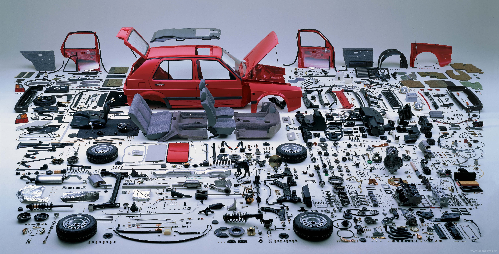
LOOKWAIT
What is this?
LOOKSEE
Hans Hansen · 1988 Golf CL · 6,843 parts
THE NAMETHE GOLF
6,843 parts.
Every piece has a name. Or it does not go back together.
LOOKWAIT
Could you put it back if you didn’t know the names?
LOOKWAIT
What does a phone look like, taken apart?
THE KITMATERIAL-X
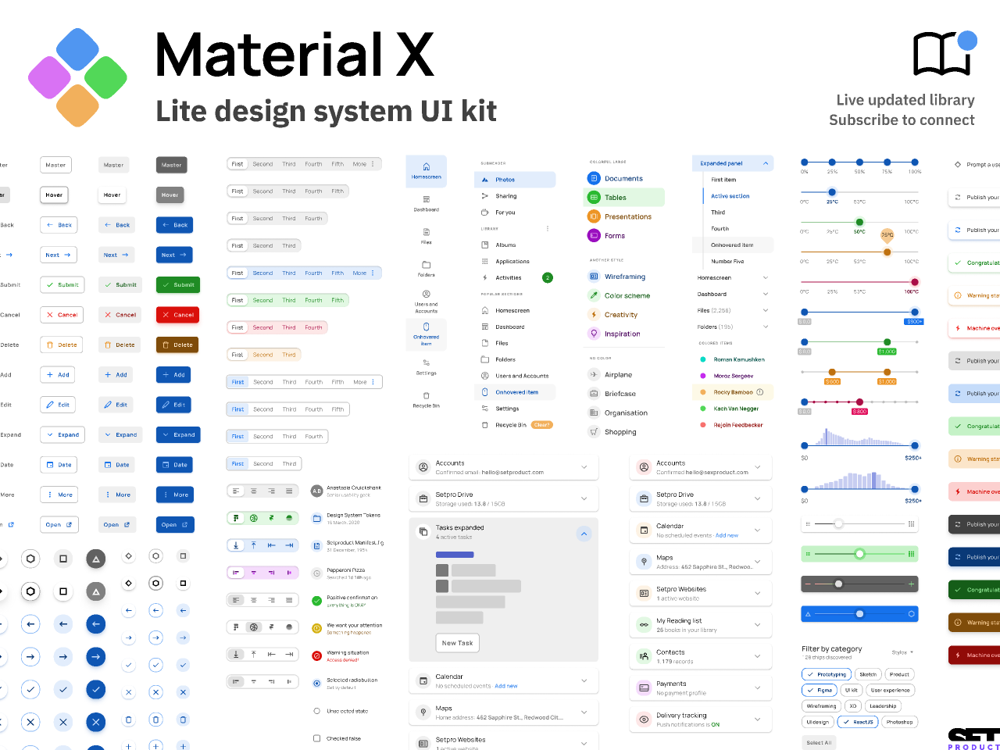
Setproduct · Material-X · Figma Community
THE NAMETODAY
Name the parts.
Then we put one job back together. AI comes last.
TODAY ENDS WHENHARD OUTCOME
Playable before you leave.
A stranger starts a session.
The jobWelcome → Home → Session → Player.
The proofThey hear the session start. No spoken tour.
The kitMeditation App instances. Not redrawn souvenirs.
AIOnly after play works. Make, then Agent.
TODAYFOUR HOURS
Show. Teach Figma. Then play. AI last.
Look. Figma.
Play. Then AI.
1 · LookGolf. Then name the parts. You guess. I name it.
2 · FigmaAll 13 videos. Account to prototype. Meditation kit is the object.
3 · PlayWelcome → Home → Session → Player. A stranger starts it.
4 · AIOnly if play already works. Same job in Make, then Agent.
MATERIAL-XFIVE JOBS
Five jobs.
Stay. Scan. Enter. Commit. After.
1 · STAYFAMILY
Stay.
1 · STAYWAIT
The strip at the top of every screen. What job is it doing?
1 · STAYTHE NAME
Bar.
Orients. One way out.
1 · STAYEXAMPLE
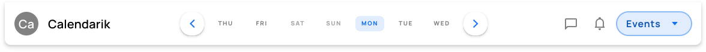
Where it sits
Every frame of Pin-up.
Five tabs. A second Book. A logo that does nothing.
1 · STAYWAIT
Three icons at the bottom. Same job as the bar?
1 · STAYTHE NAME
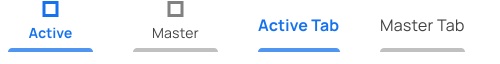
Tabs
Switch jobs.
An app that is several jobs. Home. Search. Me.
Today is one job. Tabs invent a product you did not design.
1 · STAYWAIT
A magnifying glass on a long list. What is it for?
1 · STAYTHE NAME
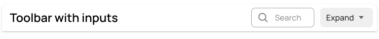
Search
Find in a crowd.
A directory. Fifty studios. They already know the name.
Three slots is not a crowd. Scanning three rows is the job.
2 · SCANFAMILY
Scan.
2 · SCANWAIT
Three identical blocks. You tap one. What is that part?
2 · SCANTHE NAME
Row.
Pick one of several. Same shape, different fact.
2 · SCANEXAMPLE
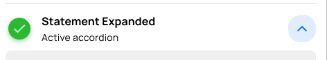
Where it sits
The list of slots.
10:00. 11:30. 14:00. Tap one. Go to Slot.
A shop of cards when three lines would do. The Book button as a row.
2 · SCANWAIT
One thing with an edge, a time, a room. Why is it not a row?
2 · SCANTHE NAME
Card.
Hold one thing still so they can look at it.
2 · SCANEXAMPLE
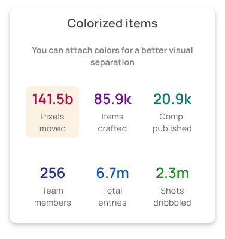
Where it sits
The slot they picked.
10:00 · Studio 2 · 2 seats. Then a field. Then Book.
A gallery of twelve cards to pick a time. A dialog pretending to be a card.
2 · SCANWAIT
A small pill that says Today. A 2 on the slot. Same part?
2 · SCANTHE NAME
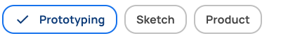
Chip · Badge
Filter. Count.
Today / Tomorrow. Narrow a long list. Not a heading in a pill.
A count on a thing. 2 seats. Not a button. Pin-up can skip both.
2 · SCANWAIT
The list has nothing in it. What should they see?
2 · SCANTHE NAME
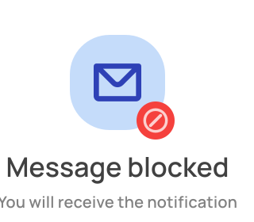
Empty
One sentence. One verb.
Nothing today. Crit is tomorrow. See tomorrow.
A mascot. A blank white phone. Search on an empty list.
3 · ENTERFAMILY
Enter.
3 · ENTERWAIT
They type a note. What must sit on the box, or they will not know what to type?
3 · ENTERWEAK

3 · ENTERBETTER

3 · ENTERTHE NAME
Field.
Collect one fact. The label stays.
3 · ENTEREXAMPLE
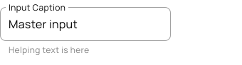
Where it sits
Slot. One fact.
Note. Optional. Need wall near door.
Name, USN, phone, email, blood group. The job already knows who they are.
3 · ENTERWAIT
On or off. Not a sentence. What is that control?
3 · ENTERTHE NAME
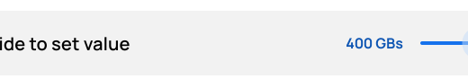
Toggle · Check · Radio
A setting. Not a form.
Remind me. Instant. On or off.
Many / one from a known set. Pin-up does not need them today.
3 · ENTERWAIT
Pick a room from a known list without typing. Why not a field?
3 · ENTERTHE NAME
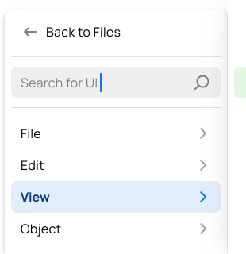
Select
The list already exists.
Studio 1, 2, Hall. Do not make them type the room name.
The slot already has a room. A select here is a second decision.
4 · COMMITFAMILY
Commit.
4 · COMMITWAIT
Three green rectangles. Which one is the verb?
4 · COMMITWEAK
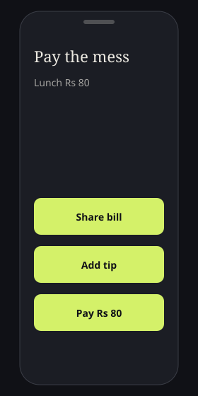
4 · COMMITBETTER
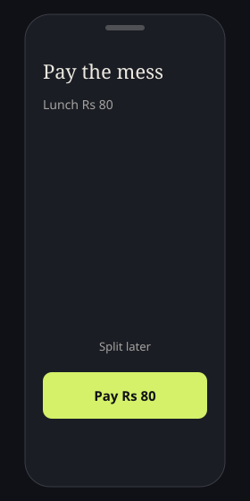
4 · COMMITTHE NAME
Button.
The tap that finishes the job. One on the screen.
4 · COMMITEXAMPLE
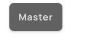
Where it sits
Book. Then Booked.
One verb. The word is Book.
Submit. Continue. Three greens of equal weight.
4 · COMMITWAIT
A circle floating over the list. Is that the verb?
4 · COMMITTHE NAME
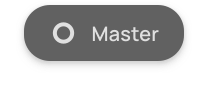
FAB
Create. Easy to abuse.
Compose. Add a thing that did not exist. Mail. Notes.
The verb is Book, on the slot. A + invents a second job.
4 · COMMITWAIT
They tap Book. A whole new page says Confirm. Did they leave the job?
4 · COMMITWEAK
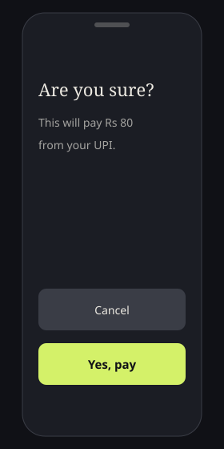
4 · COMMITBETTER
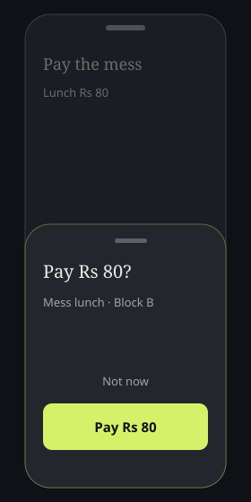
4 · COMMITTHE NAME
Sheet.
Decide without leaving. The job is still under it.
4 · COMMITEXAMPLE
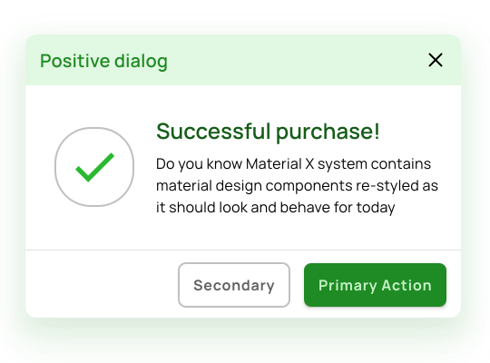
Where it sits
Over Slot. Not a new app.
Book 10:00? Studio 2 · tomorrow.
Terms of service. A carousel. Rate this app.
4 · COMMITWAIT
A box in the middle that stops everything. When is that fair?
4 · COMMITTHE NAME
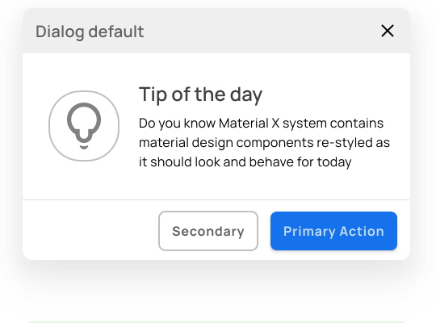
Dialog
Hard stop. Rare.
Delete booking? This cannot be undone.
Confirming Book is a sheet. A dialog for Book is theatre.
5 · AFTERFAMILY
After.
5 · AFTERWAIT
Confetti. Did the system tell them what happened, or congratulate itself?
5 · AFTERWEAK
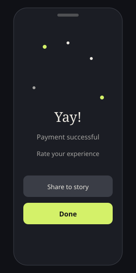
5 · AFTERBETTER

5 · AFTERTHE NAME
Toast.
Say what happened. Stay on the job. Then leave.
5 · AFTEREXAMPLE
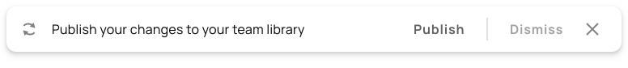
Where it sits
On the list. Verb is dead.
You’re on the wall. Button reads Booked.
A new Success page. Share to Instagram. Take a survey.
5 · AFTERWAIT
A bar that will not leave until they deal with it. Same as a toast?
5 · AFTERTHE NAME
Banner
Stays until they deal.
Wi-Fi is down. Bookings may not save. Retry.
You’re on the wall is a fact that can go. An error that blocks Book cannot.
5 · AFTERWAIT
They tapped Book. Nothing yet. What should they see?
5 · AFTERTHE NAME
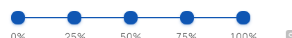
Spinner
Stay on this screen.
On the button, or over Slot. Booking…
A new Loading page. A skeleton of a different app.
CUTWHAT WE USE
Seven on Pin-up. The rest you can name.
Bar · Row · Card · Field · Button · Sheet · Toast
List, Slot, Commit, After. That is the whole app.
Tabs · Search · Chip · Badge · Empty · Toggle · Select · FAB · Dialog · Banner · Spinner
Put them on Pin-up only if the job needs them. Today it does not.
If you cannot say the job, it is leftover.
Leftover is literacy. Using it anyway is decoration.
A seventh part on Job must be restated as one of the seven, or it stays off the phone.
FIGMA01 / 13
Thirteen videos.
Official beginners course. One example each. Object is the meditation kit.
01 / 13WAIT
Figma Design is for what — apps, sites, pictures, or all of them?
01 / 13THE NAME
All of them.
Starter plan is enough. Browser or desktop. Education if you have a student email.
02 / 13WAIT
You logged in. Where does today’s work live?
02 / 13EXAMPLE
File browser
Name it Calm.
figma.com/signup. Recents. Duplicate the meditation kit. Do not edit the original. One file per group.
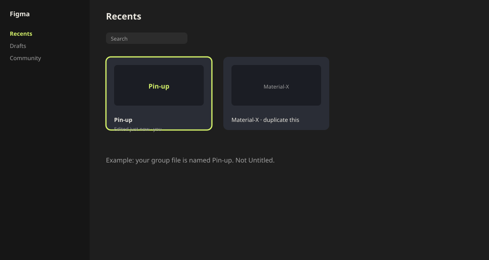
02 / 1310 MINUTES
10min
Duplicate. Add page Our flow.
03 / 13WAIT
The editor has four parts. Can you name them?
03 / 13EXAMPLE
Toolbar · left · canvas · right
List is selected.
V F T. Space or H pan. ⌘+ zoom. Pages are free. Nudge 1 / Shift-arrow 10.
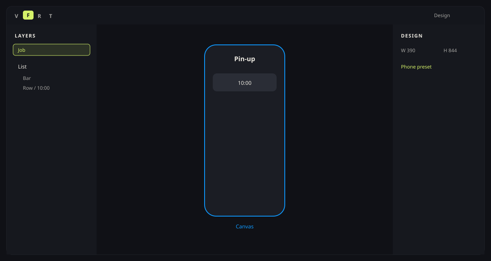
04 / 13WAIT
The blue phone. Rectangle, or something else?
04 / 13EXAMPLE
Layers · shapes · fill · text · frame
F. 390 × 844. Name Home.
R O T. Fill in the right sidebar. Nest Bar and session cards under Home. A grey R is a shape. It cannot play.
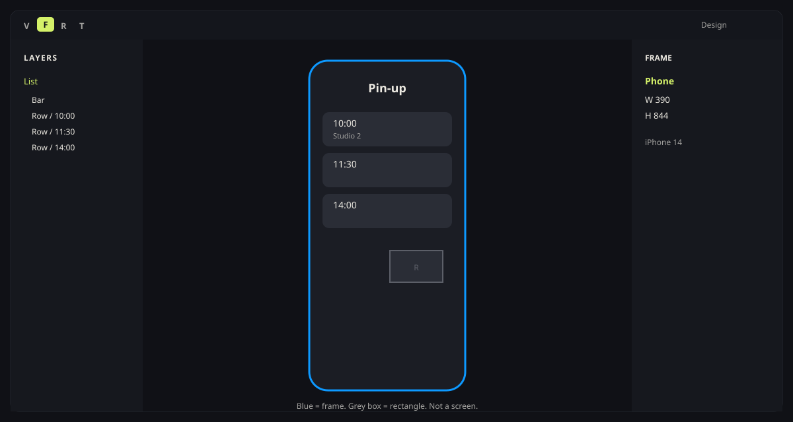
05 / 13WAIT
You stretch the phone. The bar flies off. Why?
05 / 13EXAMPLE
Presets · constraints · tidy · not a group
Left + Right. Bar spans.
F → Phone. Select Bar. Constraints: Left and Right. Stretch the phone — Bar still fills. Or skip: Shift+A. ⌘G is not a screen.

06 / 13WAIT
Book becomes Booked. The box stays short. Why is that a poster?
06 / 13EXAMPLE
Flow · gap · pad · hug
The word grows the control.
Type Book. Shift+A. Pad 16 × 10. Radius 8. Hug both. Change the word. Then ⌘⌥K.
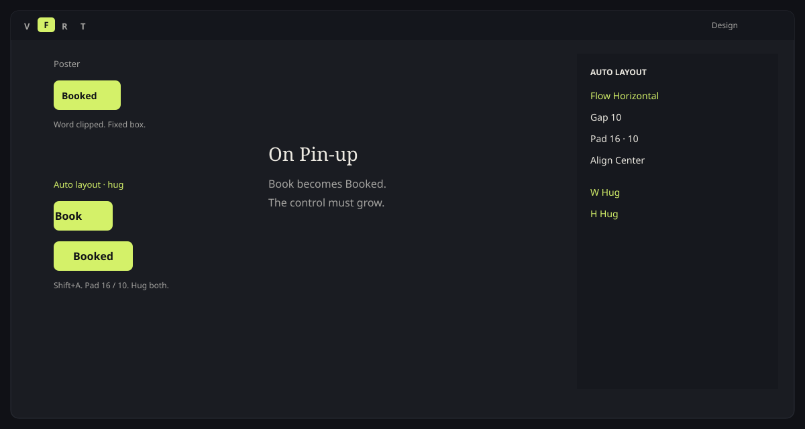
07 / 13WAIT
Book looks different on Slot and on the sheet. What did Figma invent?
07 / 13EXAMPLE
Main · instance · push · detach · variant
One brain. Two Books.
Assets onto Slot and Sheet. Push a better colour. Do not detach. Booked is State = off.
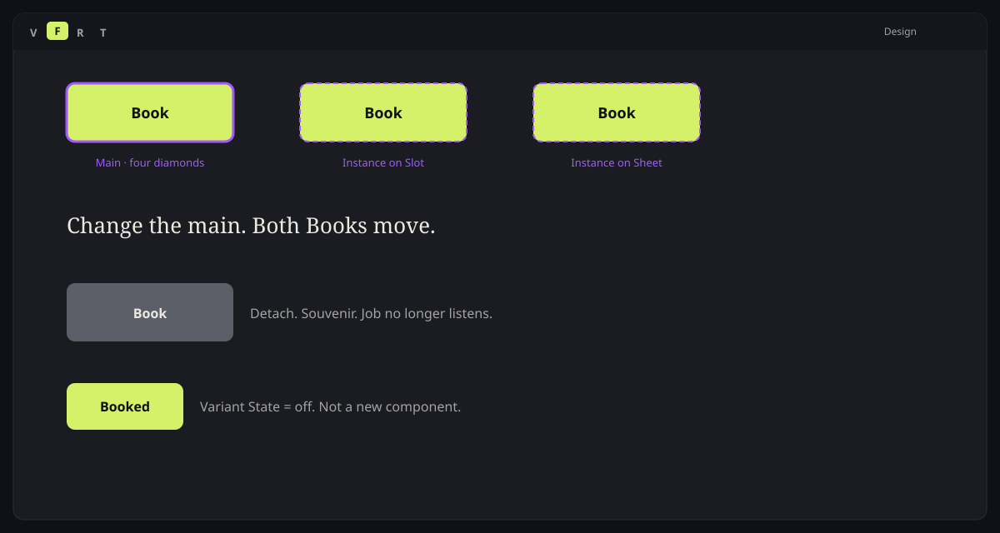
08 / 13WAIT
Time, room, seats in one block. What is that part?
08 / 13EXAMPLE
Card · container · Components page
10:00. Studio 2. Then Book.
Shift+A on the card. Phone is the container. Move mains to page Components. Job only gets instances.
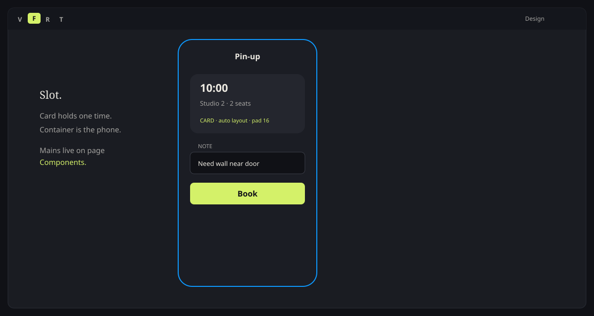
08 / 1315 MINUTES
15min
Map the right part.
Drag instances onto Our flow. Welcome, Home, Session, Player. No extra tabs. No FAB. Match the exact designs.
Instances only · from the meditation kit09 / 13WAIT
A strip at the top with the name Pin-up. Website nav, or something else?
09 / 13EXAMPLE
Nav bar · footer
On Pin-up that is Bar.
Course: 1440 × 80, wordmark, links, button, auto gap. Phone: Material-X app bar. No website footer.
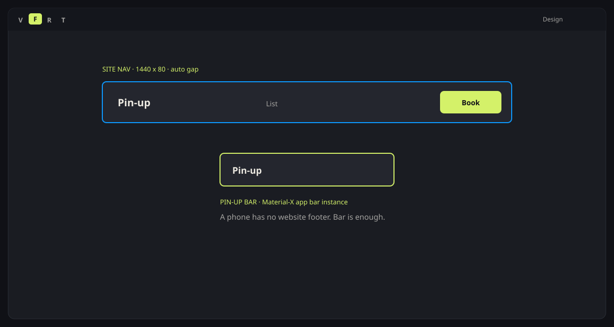
10 / 13WAIT
Two circles overlap. How do they become one shape?
10 / 13EXAMPLE
Boolean · vector · arc · swap
Union. Subtract. Intersect.
Boolean menu. Not on frames. Vector = move points. Arc = ellipse sweep. Swap instance in the right sidebar. Pin-up still uses Rows.
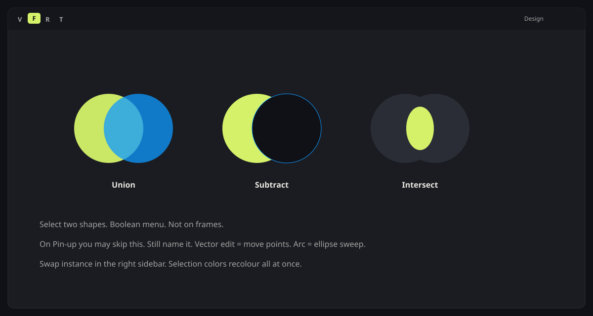
11 / 13WAIT
Which kit screens sit on each phone?
11 / 13EXAMPLE
Assemble
Four frames. Instances only.
Welcome. Home with cards. Session detail. Player. Copy the kit. Do not redraw.
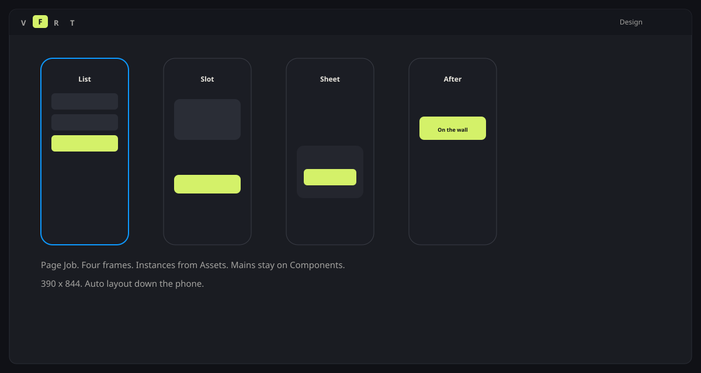
11 / 1340 MINUTES
40min
Build the four phones.
Page Our flow. F · 390 × 844. Instance the kit screens. Do not redraw Start.
F · Shift+A · Assets · no detach12 / 13WAIT
A stranger taps Get started. Nothing happens. What is missing?
12 / 13EXAMPLE
Flow · trigger · action · overlay · play
On tap. Navigate. Instant.
Get started → Home. Card → Session. Start → Player. Present. Sticky / fixed / scroll to: named, not required today.
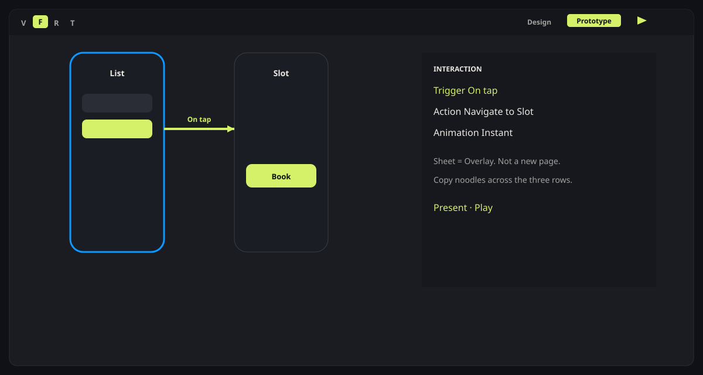
12 / 1320 MINUTES
20min
Noodles. Then present.
Play. Start on Welcome. Finish on Player. Give the laptop to the next group.
If play does nothing, it is a poster12 / 13WAIT
Give the laptop to the next group. Can they finish without you talking?
13 / 13SUMMARY
You can start.
File to play. The session starting is the proof. Watch the playlist tonight if a move was fast.
THEN AIONLY AFTER PLAY
Play works.
Then AI.
If play does nothing, stop. Do not open Make.
AIWAIT
If you type “make a meditation app”, what will it invent?
AIWEAK
A product prompt is a fail.
Make a nice meditation app with a modern UI.
AISEE
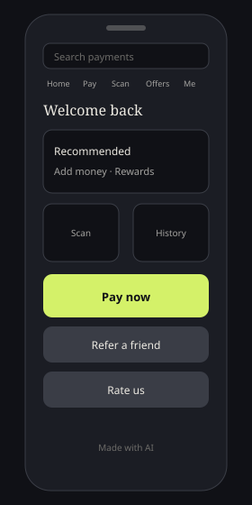
AICOPY THIS
Ask for the job. Name the parts.
Make a mobile flow, 390 × 844. Job: start one calm meditation session. Four screens only: 1. Welcome — one Get started button. 2. Home — title Home. Three session cards. 3. Session — one card (name, length). One button: Start. 4. Player — now playing. Pause. That is After. Do not add sign-in, tabs, search, FAB, or a profile. Use the Meditation App UI Kit.
AI20 MINUTES
20min
Make. Then kill three.
Paste the prompt in Figma Make. Screenshot the dump. Kill three chrome additions. Rebuild from your instances if Make invents a new Book.
Ask for a part. Never a product.AIBETTER
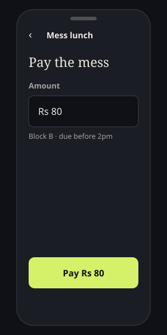
AIAGENT
Then Agent. Three asks.
“Design the meditation app.”
Show the class what it invents. Name the leftovers out loud.
Paste today’s prompt.
Same four screens. Same seven parts. Compare to A.
“Replace every button with our kit Button instance.”
If it cannot, you place the instance. Agent drafts. You own the kit.
A sticky of three kills. Search, tabs, extra CTA, mascot, Made with AI. Chrome without a job does not enter Job.
ASSIGNMENT 05BEFORE SESSION 6
The clickthrough is the pass.
A stranger starts a session.
PlayWelcome → Home → Session → Player. That is the class.
File390 × 844. Kit instances. Not redrawn buttons.
PassA stranger finishes without a spoken tour.
Then AIOnly after play works. Same job in Make, then Agent.
ASSIGNMENT 05PASS WHEN
Submit the view link
If play does nothing, do not submit it.
Share
- Share → anyone with the link can view
- Paste the link in the class sheet
- Private window. Start on Welcome. Tap through Player
Pass when
- A stranger starts a session without a spoken tour
- Start is an instance. Changing Kit moves Our flow
- Leftover parts are named, and not on the phone
Fail when
- A kit page with no playable Job
- Make or Agent before a stranger can tap Get started
- Sign-in, tabs, FAB, or a detached souvenir
SESSION 05THE JOB IS THE PROOF
Start the session.
A stranger taps Get started. Play works. Then — and only then — Make, then Agent. Submit that file before Session 6.